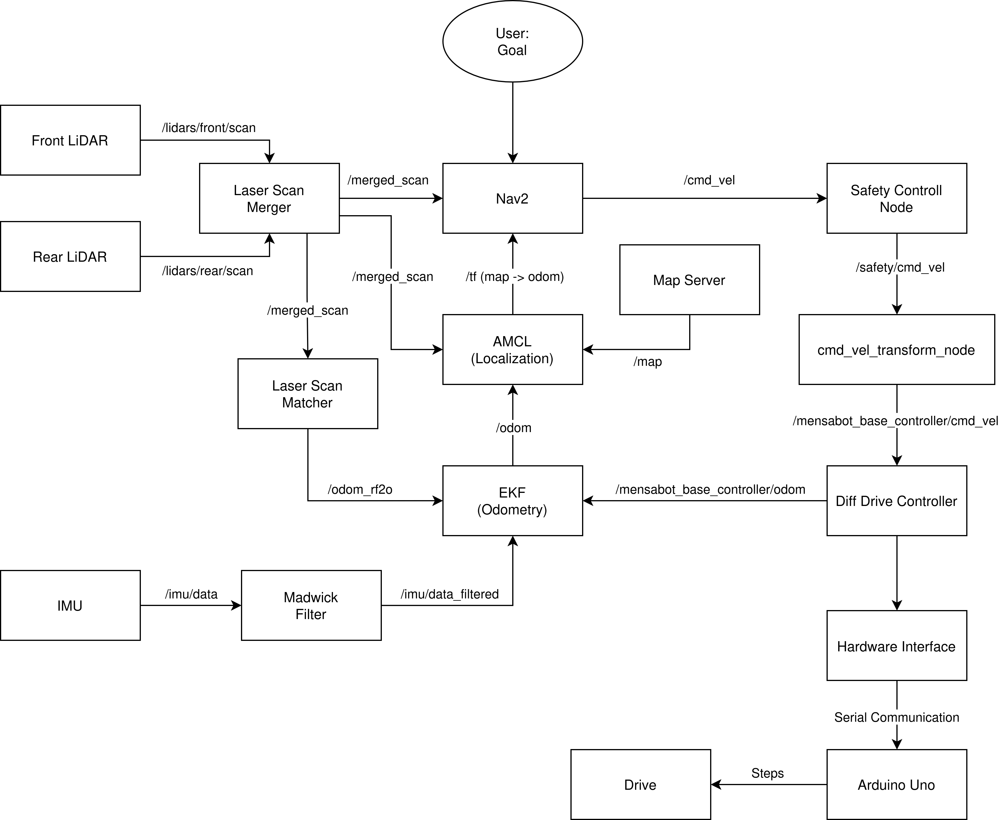

Software Architecture
The MensaBot software is based on a modular ROS 2 architecture. Individual functionalities are implemented as independent ROS 2 packages that communicate through standardized ROS interfaces such as topics, services, actions, and the TF framework.
This architecture enables both simulation and operation on the physical robot while sharing nearly the same software stack. Only the hardware-specific interfaces differ between both operating modes.
{kind=link}

Overview of the MensaBot software architecture.
Software Layers
The software is organized into several functional layers:
Sensor Layer
Localization Layer
Navigation Layer
Safety Layer
Motion Control Layer
Hardware Layer
Each layer is responsible for a dedicated task and communicates with neighboring layers through well-defined ROS 2 interfaces.
Package Organization
The ROS 2 workspace consists of multiple packages, each implementing a specific subsystem.
Package |
Responsibility |
|---|---|
mensabot_bringup |
Launch files for simulation and real hardware |
mensabot_description |
Robot model and URDF description |
mensabot_navigation |
Navigation and localization configuration |
mensabot_hardware |
ros2_control hardware interface |
mensabot_simulation |
Gazebo simulation environment |
mensabot_utils |
Utility and safety nodes |
Additional third-party ROS packages are integrated for sensor drivers, localization, and navigation.
Software Pipeline
During normal operation, the software executes the following processing sequence:
Sensors acquire environmental and motion data.
Localization estimates the current robot pose.
The navigation stack calculates the desired robot motion.
The safety system validates all motion commands.
Velocity commands are converted for the drive controller.
The hardware interface transmits commands to the motor controller.
The robot executes the requested movement.
Further Information
The following sections of this documentation describe the individual software components in greater detail:
API Reference
Launch Files
Navigation
Hardware Interface
Utility Nodes